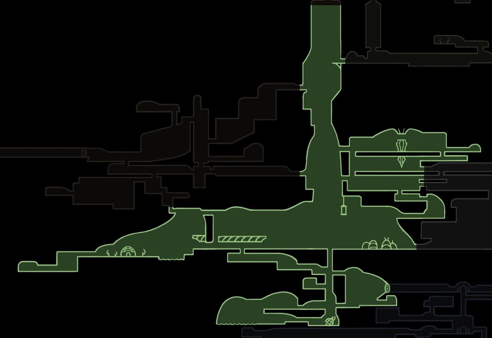
Moss Grotto
Початок подорожі Хорнет у зелених печерах.
Особливості: Зарослі печери, наповнені мохом та таємничими істотами.
Небезпека: Початкові вороги та пастки з колючками.
Відкрийте для себе абсолютно нове королівство шовку та пісні. Керуйте Хорнет, боріться з сотнями нових ворогів та розкрийте таємниці занедбаного світу.
Досліджуй величний та небезпечний світ Silksong. Натисни на картку, щоб дізнатися більше.

Початок подорожі Хорнет у зелених печерах.
Особливості: Зарослі печери, наповнені мохом та таємничими істотами.
Небезпека: Початкові вороги та пастки з колючками.
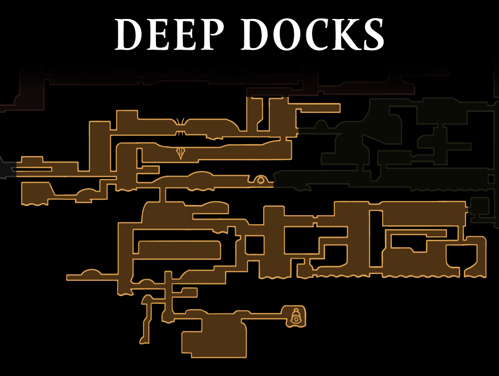
Підземні доки, охоплені гарячим полум'ям.
Особливості: Розпечене залізо, лавові потоки та механічні робітники.
Небезпека: Висока температура та агресивні вороги-механізми.
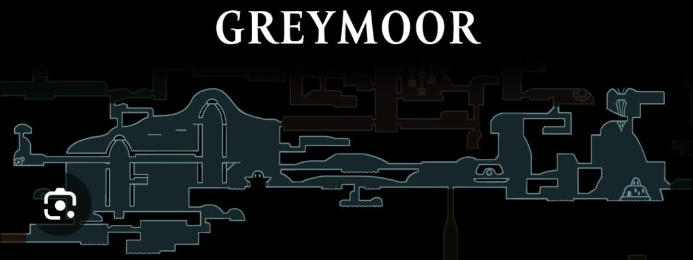
Величезні туманні рівнини та старовинні вежі.
Особливості: Вічна осінь, відкриті простори та похмурі руїни.
Небезпека: Блукаючі монстри та складний рельєф для акробатики.
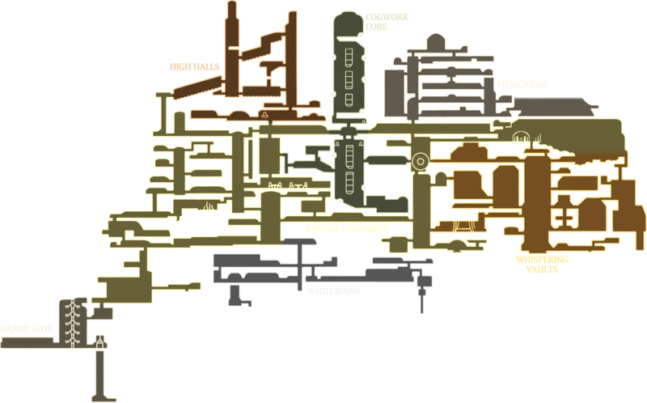
Золота вершина Pharloom.
Особливості: Велична цитадель, де зберігаються таємниці шовку і пісні.
Небезпека: Найсильніші елітні вартові та пастки королівського рівня.

Безкрайні піщані дюни та старовинні руїни.
Особливості: Золотисті пустельні краєвиди, заховані механізми та давні поховання.
Небезпека: Піщані бурі, підземні хижаки та хиткі піски.
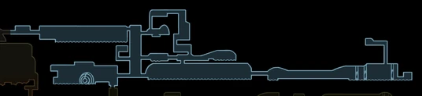
Затоплені болота та в'язкі брудні рівнини.
Особливості: Топкі брудні води, напівзанурені руїни та отруйна флора.
Небезпека: Повільне пересування в бруді, небезпечні амфібії та токсичні пари.
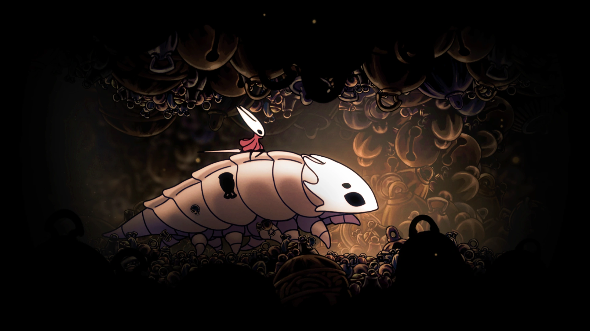
Вузькі печерні тунелі глибоко під землею.
Особливості: Тісні коридори, що з'єднують різні частини королівства.
Небезпека: Раптові засідки диких істот та обмежений простір для маневру.
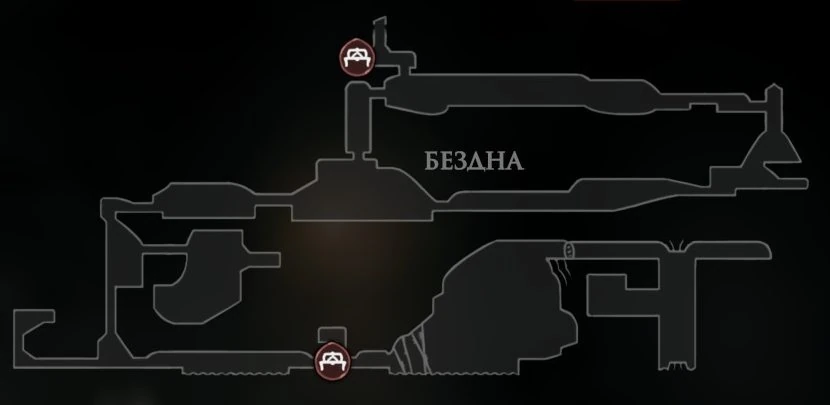
Найтемніше і найдавніше місце на дні світу.
Особливості: Вічна темрява, стародавні секрети та джерело порожнечі.
Небезпека: Повна відсутність світла, незбагненні жахи та смертельні падіння.
Принцеса-захисник Галловнеста, яка потрапила у полон до незнайомого світу.
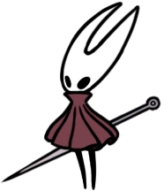
Хорнет — швидка, граціозна та смертоносна воїнка, яка володіє голкою та нитками шовку. На відміну від Лицаря з першої частини, вона вміє розмовляти, має власний характер та створює різноманітні інструменти прямо під час бою.
Смертоносні інструменти, пастки та голки, які Хорнет створює під час бою.
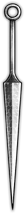
Основна зброя Хорнет. Довга, гостра і надзвичайно міцна, вона використовується як для швидких ударів, так і для акробатичних стрибків.
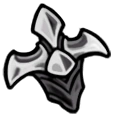
Дозволяє Хорнет миттєво лікуватися, виконувати потужні атаки шовком та взаємодіяти з навколишнім середовищем.
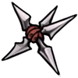
Метальні інструменти та бомби-пастки, які Хорнет розкидає на арені, щоб стримувати натовпи ворогів.